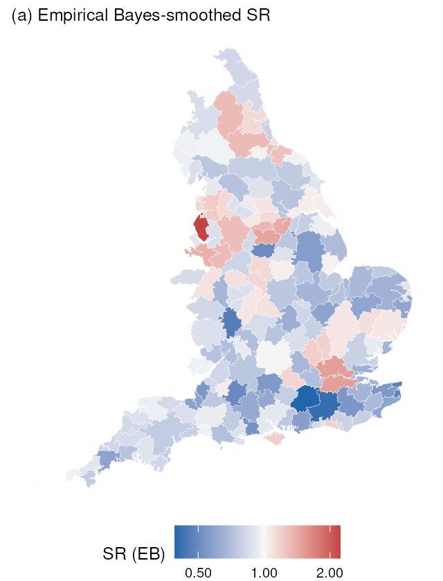
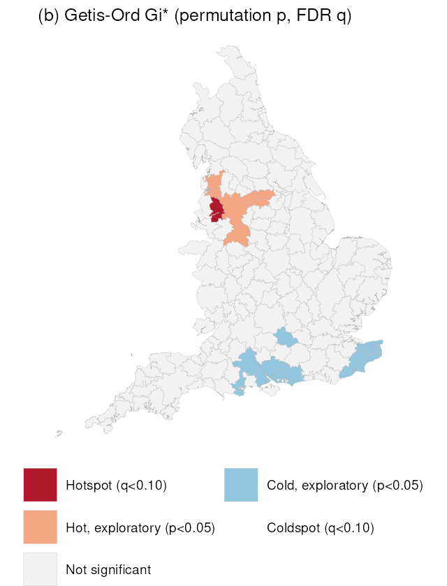
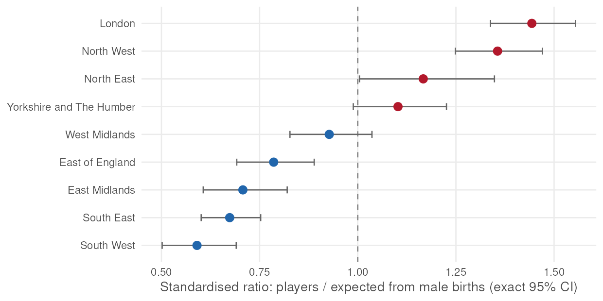
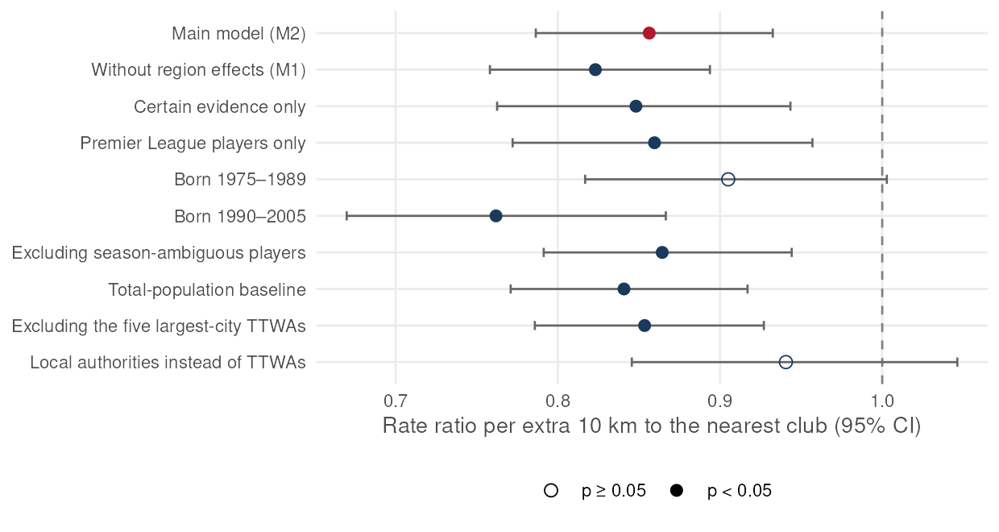
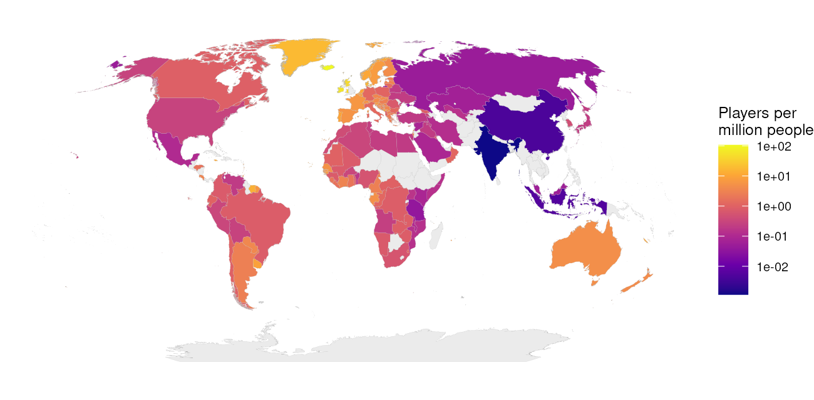

Players are not born in proportion to births. A belt from Merseyside and Lancashire across to South Yorkshire produces the most players per boy born, and the south coast the fewest. Within regions, boys born closer to any professional club were more likely to reach the top two divisions. Deprivation and urbanisation do not explain the differences once region is included, and nor does distance to an elite Category 1 academy.
Associations between areas, not causes. Full methods, results and limitations are in the paper; every map and table can be explored in the dashboard.
English football spends heavily on finding young players, yet it is not known whether the players who reach the top two divisions are born across England in proportion to births or in particular places. We ask where English-born men who played in the Premier League or the Championship were born, compared with where boys were born. From Wikidata and Wikipedia we identify 6,581 men born 1975–2005 with evidence of a league appearance at one of 78 top-two clubs since 1992; 3,081 were born in England and 3,017 can be placed on a map. Expected counts come from 9.54 million male births estimated from ONS mid-year populations. Players are 2.4 times as common per birth in London (4.56 per 10,000 male births) as in the South West (1.87), and 7 of 9 regions differ from England at p < 0.05. Within regions, birthplaces are more clustered than births at distances up to 60 km (inhomogeneous L-function, DCLF p = 0.02; births-only null p = 0.50). Across Travel to Work Areas (TTWAs) the Empirical Bayes Moran’s I is 0.27 (p = 0.001), with high values in a belt from Merseyside and Lancashire across to South Yorkshire and low values along the south coast, but only one area (Warrington and Wigan, q = 0.062) comes close to passing a false discovery rate correction. In a negative binomial model with region effects, each extra 10 km to the nearest professional club lowers the rate by 14% (rate ratio 0.856, 95% CI 0.79–0.93, p < 0.001), while deprivation and urban share have no effect once region is included. For the 594 players born 1996–2005, who were of academy age after the 2012 academy reform, distance to any club matters (rate ratio 0.738) and distance to an elite Category 1 academy does not (0.998, p = 0.93). Of all 6,581 study players, 53% were born outside England, mostly in Western Europe and the other UK nations. Of the stated hypotheses, H0 (births alone explain the pattern) is rejected, H1 (individual hotspots and coldspots) is supported for the overall pattern but only weakly for named areas, and H2 (association with deprivation, urbanisation and proximity to clubs and academies) is supported for club proximity only. The results describe areas, not individuals.




